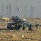
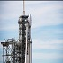
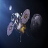

Entradas Recientes
El futuro de la exploración espacial implica tanto la exploración telescópica como la exploración física del espacio mediante naves espaciales robóticas y vuelos espaciales tripulados.
- OSIRIS-REx maniobra con precisión de regreso a la Tierra
- La misión Juno vuela a mil kilómetros de Ganímedes
- Ingenioso sistema antipolvo funciona con la misión Insight en Marte
- La NASA estudiará en Venus cómo el hermano de la Tierra es un infierno
- Cosmonautas preparan la llegada del nuevo modulo ruso a la ISS
Contenido Destacado
El motivo de la inversión humana y de las naciones individuales en la exploración espacial ha cambiado drásticamente desde la carrera espacial del siglo XX.
-

Roscosmos comienza a ofrecer recorridos espaciales (2021)
La agencia rusa Roscosmos se ha asociado con Space Adventures para crear un nuevo destino turístico ... en el espacio, y la agencia espacial rusa también tiene planes de convertir una Estación Espacial Internacional fuera de servicio en un hotel de lujo. [...] Leer más -

SpaceX lanza una misión a Marte (2022)
La compañía de Elon Musk, SpaceX, planea lanzar una misión sin piloto en 2022 para "confirmar las fuentes de agua, identificar los peligros y poner en marcha la infraestructura inicial de energía, minería y soporte vital". [...] Leer más -

Misión Artemisa de la NASA a la Luna (2024)"
La NASA anunció que planean enviar a la primera mujer y al próximo hombre de regreso a la Luna para 2024. [...] Leer más